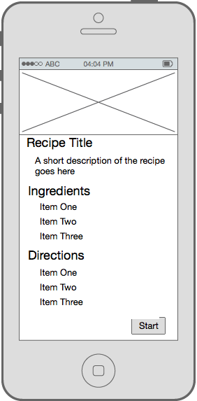

Vincent's Reflection on SueChef (12/10/16)
This has been an intensive few months, but working on SueChef was a fun project work on. Despite the simplicity of the concept, it's also been quite challenging to make a satisfactory product. I've worked on many prototype apps in the past, but working on SueChef finally taught to me how necessary it is to focus on an MVP and add features once a simple product is functional. It's easy to catch a case of featuritis, and I definitely had a lot more in mind for SueChef. If we had approached this app in the same way I imagined it, SueChef would probably still not be in the app store.
I also learned a lot about teamwork in software engineering. From doing small, personal projects, I developed a sense of control that isn't very practical in larger projects with multiple engineers. I may not know what other engineers are doing, but that shouldn't be my responsibility to worry about it.
In retrospect, I wish we had more in-class time to work on SueChef. At times, it was difficult to find time to meet with the team. In class however, we would have access to our advisor, Ming Chow, other students and their expertises, and be able to meet up conveniently.
With that said, I am very happy with the development process and the way SueChef turned out. More user testing would be ideal, but as three college students, our resources and outreach is quite limited.
SueChef 1.1 (12/09/16)
As we've noted in the past, we still had a few bugs to sort out in the release version of SueChef. We quickly released an update to sort out the crashes.
SueChef Version 1.1 Release Notes:- SueChef's selection of recipes increased; SueChef finally hooked up to a backend REST API
- SueChef now asks for permissions for microphone usage instead of crashing
These features were extremely necessary yet missing from the initial release version. We apologize for any inconvenience this lack of features caused.
We are still in talks about UX in regards to information buttons, more intuition navigation, and signifiers for swipe capabilities. Stay tuned for an update on that soon.
SueChef: Download on the Google Play Store now!
Finally, the moment you've all been waiting for, SueChef is available for download on the Play Store. A couple of screenshots and simple Photoshop for creating decorative banners, and bam! SueChef can now be used by you at home. As of right now, SueChef does not ask for permission to use microphones, which results in the app crashing. If you download it before the next release, please manually add the microphone permission in your settings. Also keep in mind that the next update will include the backend, where many more recipes will be available to you.
Affordances and Signifiers: The State of Design in Suechef (11/9/16)
The Design of Everyday Things by Don Norman is a great book for engineers to learn a bit about good user experience and design. Thus far, SueChef has been about making a functioning product, and we've been ignoring good design for the most part. We added swipe navigation to switch steps in a recipe, which we thought was pretty cool. In Norman's terms, we gave SueChef an affordance of swipe capability. However, by removing the buttons that we thought cluttered the screen, we removed signifiers that brought users' attention to the swipe capabilities.
As it stands, there also are no signifiers that bring attention to the keyword-spotting capability. Users do not ever know that they can say "Okay, Sue Chef" to activate.
Now the Sue Chef is on the Play Store, we really need to start working on the finer details. Info buttons to explain usage or animations that appear when a user seems confused are crucial features that we need to add in order to appeal to users who we can't explain the app to directly. We also need to play more on the theme of SueChef. Friends and families have noted that "sous" in "sous-chef" is misspelled, when in actually Sue is supposed to be the name of the app's mascot/icon. Thus far, we never specified who Sue is, and the misspelling can aggravate certain users, adding negative user experience.
Building upon the MVP/Polishing (10/3/16)
So far, we've successfullly hardcoded three recipes and created text-to-speech talk-throughs of the recipes. As touched upon earlier, core functionality of the app was missing. We were missing keyword spotting voice activation, voice command/recognition, dynamic and extensive selection of recipes, and overall front-end polish. Our most recent efforts targetted and mostly solved all of these issues.
Firstly, we finally got around to incorporating CMUSphinx's keyword spotting. It was actually relatively simple, however we did have to import a lot of dictionary txt files that may be cluttering our app. We will have to reassess to see if these files are necessary, since we simply needed one string, "Okay, Sue Chef", to add to the kws_search method included in the CMUSphinx listener class.
Secondly, we set up the API.ai SDK to easily send audio files (of voice commands) to API.ai to parse. We used the API.ai web console to configure our intents and entities. For now, we only had one intent, which is to change the step, appropriately named changeStep. We then set the intent to recognize various sentence structures and synonyms for "next", "back", and "repeat" and return those keywords in JSON format. This allows our app to easily tell what the intent of the user's command is.
As mentioned, we hardcoded our recipes into our app so far, but we definitely want a server that can store and add new recipes so that all clients can receive them. We used recipes scraped from the web to populate a Mongo database, and any requests to our REST API would return a collection of all our recipes so far. Relevant info for each recipe includes steps, ingredients, and image URL, description and title. Although we haven't hooked up our backend to our Android app just yet, we predict that this shouldn't cause too many problems for us.
Until now, we had buttons at the buttom of StepActivity to control the next, back, repeat commands. We wanted to get rid of these ugly buttons, but we didn't know how to still include manual navigation functionality. We decided to include gestures; by implementing swipe recognition, the user can now swipe left to get the next step, and swipe right to get the previous step. We thought this would be beneficial for UX, although we have not prompted the user to inform them that swiping is a possibility. We may solve this by including an information button in the navbar, or by having an onboarding process upon first install of the app.
We've been talking a bit about including animations in our app to increase user experience. We finally decided to implement some basic slide on/off animations to supplement the swipe gestures. We found a library on GitHub called AndroidViewAnimations created by daimajia. This allowed very simple and straightforward implementation of just what we wanted. Now, when a user swipes to navigate through the recipe, the corresponding text on screen slides on or off the screen. Just beautiful.
Testing Our App (10/31/16)
For the most recent sprint, we underwent a series of various testing methods to improve our app. First were the required methods, Lint and Crashlytics. You can read about our experience with Lint in-depth below. Crashlytics was a much less involved process, it was simply to register for and install, and relatively simple to use as well. We made sure it was working correctly by coding in a test button that forced the app to crash. So far we have not encountered any actual crashes since beginning using it, but we trust that it will prove quite useful in the future.
Our two other methods were usability tests and . For the usability tests, we each had a couple friends open the app up and try to navigate through it. We asked them if it behaved as they expected, if any functionality felt awkward, and if the flow of the app was natural. We recieved not quite as much feedback as we had hoped, but certain responses were put into action immediately. For example, several users noted that they expected the ingredients and directions lists to be expanded by default when they enter the recipe view. This was not the way we had it, as we felt users may not realize that there was more information to be found below. But upon realizing that this behavior was not what users expected, we made the change and are satisfied with the outcome.
We also ran SueChef in its current version through the Veracode static analysis to check for security flaws in our app.
We set the policy evaluation of SueChef to low because we currently don't (and don't plan to for a while) have a login system. Anyone can download the app and start cooking! Therefore, no private information and being stored, and there isn't much to exploit in our app.
And... *drumroll* we got a score of 94!
Given how we have no critical info to protect in our app, that's pretty good. Regardless, certain issues like code quality can be addressed easily. We still have more functionality to add to our app, but by release, we hope to resolve all of these issues.
Using Lint to Clean Our Code (10/27/16)
In our limited experience of Android, we've encountered a lot of Android particularities: strings shouldn't be hardcoded, certain functions may raise NullPointerException, alignParentLeft should be replaced with alignParentStart, among many other things.
Using Lint was surprising easy and pleasant. Just as described, Lint served as our much needed nit-picky code reviewer. It gave us around 100 code "errors" to fix, and a lot of the time Lint would fix it for us if we simply let it. For each of the issues, Lint gave very descriptive messages about why it should be fixed and the multiple methods to go about resolving it.
We spent about 40 minutes reading through Lint messages and letting it fix the bugs for us. Before and after Lint reports can be seen on our GitHub repo.
We've since continued adding on to our project, so we likely will need to run Lint again in the near future. Stay tuned for our update on incorporating CMUSphinx and API.ai.
Scraping for Recipes & Flask (10/20/16)
Because the BigOven API requires a paid account, we have been loking for an alternative to sourcing recipes.
We found an API that can parse a recipe if given a URL to a recipe that follows schema.org's or microformats.org's HTML recipe standards.
https://github.com/kcmoffat/recipe-apiWe looked into a few different sites for sourcing recipes and settled on epicurious.com
To get URLs of recipes, we're using a python script with lxml to scrape epicurious for the URL of the most recent recipes.
Since we'll be scraping with this python script as well as doing some natural language processing, we've decided to switch to a Flask backend to serve recipes to the app.
MVP Features and Next Steps (10/13/16)
We put our heads down and squeezed out an MVP today. We implemented all of the features that we aimed for last week, including a step-by-step view, called the StepsActivity, and a recipe overview activity, called the RecipeActivity.
In StepsActivity, the user can use buttons to navigate through the recipe directions. As the user moves forward or backward in the recipe, the app uses the Android text-to-speech feature to dictate the recipes.
The team also implemented several design aspects of Material Design. We used a floating action button in RecipeActivity and applied a color theme, following Android's Material Design color guidelines. Since red and white are reminiscent of food (think checkered recipe quilts), we chose to use related shades of red.
While we call this the MVP, we are missing some crucial features that we hope to resolve in the coming weeks. For one, all recipes are currently hardcoded into the app. We've had trouble finding recipe APIs that fit our needs, as a lot of APIs aren't free, don't have cooking directions, or have directions that are way too long. Ideally, we need an API that gives us recipes in array form with one or two sentences max per step. Since we couldn't find an API, we haven't built the server. We happened to stumble across this recipe scraper API found on GitHub, so we likely will be using this for recipes until we find a more appropriate API to consume
For two, the main appeal of this app will be its voice recognition. Users will be interested in talking to their cooking assistant, Sue, but as it is right now, users have to press buttons to have Sue talk to them. As conversation is one-sided, the app in its current state doesn't have much wow factor. We hope to tackle that soon.
Moving Towards an MVP (10/6/16)
This week we made some preliminary decisions regarding the building blocks we wanted to use, as well as began to think about moving towards an MVP. The APIs we had been thinking about (such as Wit.ai and BigOven) seemed to not fit our needs as well as we initially hoped, so we made the switch to Api.ai and Yummly. However, these API decisions were moved to the backburner as we began to think more about what was strictly necessary for an MVP. We decided on what features were truly core to SueChef and began implementing only those. The foundational pieces we decided on are: recipe overview, recipe step-by-step view, and text-to-speech during the step-by-step view. This means we cut (for now) features like speech recognition, recipe finding, and social interactions.
Once these decisions were made, we began work implementing these core features. We decided to use dummy data for a recipe instead of a real recipe for now, so that we did not have to figure out both an API and how to manage the data from it at the same time. This piece by piece approach is much more practical and disciplined than attempting to build all parts of a feature simultaneously.
We have made decent progress towards our MVP already and will continue towards that goal for next week. In the meantime, check out the three activities we have so far.
Beginning the Development Phase (9/29/16)
This week we began the early stages of development. Progress is slow as we continue to familiarize ourselves with Android development, and more time is spent 'experimenting' than actually putting together finalized code. This is of course a necessary phase in the development cycle, but it can feel arduous at times.
Next week we will continue exploring Android development, and progress towards a bare-bones skeleton for our app.
Further Thoughts on the Tech Behind SueChef (9/23/16)
The team is still studying up on Android development. While we are still learning the technicals, we've done a lot of brainstorming on the technologies we can incorporate into the product.
As discussed in our previous blog entry, CMUSphinx will be a necessity for keyword spotting. Without it, users will have to press a button to turn on their microphones, essentially ruining the purpose of SueChef.
Unfortunately, we cannot use CMUSphinx for its speech recognition and speech parsing abilities as we'd have to set up our own language models and dictionaries. As an alternative, we decided to incorporate Wit.ai. It has both speech recognition and speech parsing through a REST API. As Venturebeat says, "thanks to companies like Wit.ai, even kids at hackathons are showing off weekend projects that are voice-controlled." This should speed up our development.
If you took a look at our mockups, image display, especially in grid layouts, will be integral to the design of our app. We are looking to incorporate Picasso, an Android library for image downloading and caching. It will make user experience a lot more responsive and take care of a lot of the headaches that come from layouts.
We're looking to start development in the next week.
SueChef App Proposal (9/16/16)
The Goal of SueChef
Sue Chef is your assistant in the kitchen. She will help you while you cook by reading the recipe to you and responding to your voice.
Ask Sue "How much oregano should I use?" or "What's the next step?"
Target demographic
Anyone who cooks at home or is a cooking enthusiast would use this app.
Wireframe and mockup ideas
Recipe Detail

Guided Cooking

Tinder Search

Pinterest Search

Platform Architecture
- Node.js server
- CMU Sphinx for speech recognition
- Big Oven API ⋅⋅* (350,000+ recipes)
Core functionalities
- Allow user to interact with recipes
- Sue responds to basic voice commands
- "Sue, next step."
- "Sue, repeat that step."
- Sue reads the recipes aloud
- Search for recipes
Future plans and extended functionality
- Responds to more advanced commands like "What temperature should I preheat the oven to?"
- Tinder-style UI for finding new recipes
- Pinterest-style following other users/chefs
- Ability to comment and rate recipes
- Add recipes from various sites (Pinterest, NYTCooking, Food Network, etc)
- Take a photo of a recipe and allow Sue to read it
- Search recipes by nutritional information
Mobile App Features
- Speakers
- Internet
- Mic
- Camera
Obstacles and Limitations
- Issues with voice recognition
- Parsing of recipes from non-API sources
- Difficulty building social aspect of the app
Market/Advertising Strategy
- Have YouTube cooks use and mention the app in videos
- Advertise on cooking and recipe sites
- Product Hunt
Created by Alex Ravan, Chase Crumbaugh, and Vincent Tran